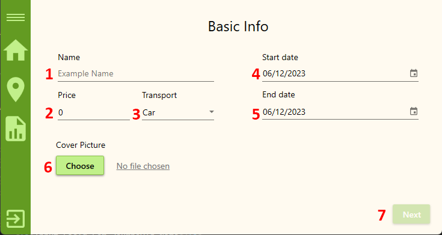

Add journey
This is the first of three pages for adding/editing journeys that the agent sees after clicking the 'Add Journey' ('Edit Journey') button on their home page. The 'Add Journeys Basic Info' page has the following layout:

- Input Field For Journey's Name
- Input Field For Journey's Price
- Dropdown Menu For Journey's Type Of Transport
- Input Field For Selecting Journey's Start Date
- Input Field For Selecting Journey's End Date
- Button For Selecting Journey's Cover Image From Your Computer
- Button For Next Step In Proccess Of Creating Journey
Journey's name
The journey name is an important aspect of your travel experience. It serves as a descriptive identifier that captures the essence of your journey. When choosing a name, keep the following guidelines in mind:
- Length: The journey name should be between 2 and 30 characters long. This ensures that it is concise and memorable while providing enough space to express the essence of your adventure.
- Descriptive: Aim to create a name that effectively describes your journey. Think about the main theme, destinations, or experiences that will define your trip. Consider using keywords or phrases that encapsulate the essence of what you hope to encounter or achieve during your journey.
Journey's Price
The price of your journey is an important factor to consider when planning your travel expenses. Here are some guidelines regarding the journey's price:
- Numeric Value: The price should be represented as a numerical value. It should be a positive number that reflects the cost associated with your journey.
- Positive Amount: Ensure that the price is a positive value. It should be greater than zero.
- Consider All Costs: When determining the price, take into account all relevant expenses, including transportation, accommodation, meals, activities, and any additional costs specific to your travel plans.
Journey's Type Of Transport
The choice of transportation for your journey plays a significant role in shaping your travel experience. The Create Journey window provides a dropdown menu with three options: car, bus, or airplane. Here's some information to consider regarding the types of transport:
- Car: Selecting the option of traveling by car offers flexibility and independence. It allows you to have more control over your itinerary, make spontaneous stops, and explore off-the-beaten-path destinations. Traveling by car can provide a sense of freedom and convenience, especially for road trips or journeys that involve exploring multiple locations within a specific region.
- Bus: Opting for bus transportation can be a convenient and cost-effective choice, particularly for longer distances or when traveling between cities or towns. Buses often provide comfort and amenities, such as reclining seats, onboard entertainment, and restrooms. Traveling by bus can be an opportunity to enjoy the scenery, interact with fellow travelers, and relax during the journey.
- Airplane: Air travel is known for its speed and efficiency, making it an excellent choice for long-distance or international journeys. Airplanes offer a quick and convenient mode of transportation, allowing you to reach your destination faster and explore diverse locations around the world.
Journey's Start Date
In the Create Journey window, you will find a field to enter the start date of the journey.Consider the following guidelines when assisting travelers with selecting the start date:
- Date Format: Enter the start date using the "mm/dd/yyyy" format. For example, if the journey is scheduled to begin on October 15, 2023, you would enter "10/15/2023" in the start date field.
- Minimum Date: The start date must be at least tomorrow's date. This requirement ensures that the journey begins in the future and allows for proper planning and preparation.
- Calendar Menu: To make it easier for travelers to select the start date, they can click on the calendar menu icon. This action will open a date picking dialog, where they can choose the desired date using a calendar interface.
Journey's End Date
In the Create Journey window, you will find a field to enter the end date of the journey.Consider the following guidelines when assisting travelers with selecting the start date:
- Date Format: Enter the end date using the "mm/dd/yyyy" format. For example, if the journey is scheduled to begin on October 15, 2023, you would enter "10/15/2023" in the end date field.
- Minimum Date: The end date must be the same as or after the start date of the journey. This constraint ensures that the journey duration is valid and avoids inconsistencies in the travel itinerary.
- Calendar Menu: To make it easier for travelers to select the start date, they can click on the calendar menu icon. This action will open a date picking dialog, where they can choose the desired date using a calendar interface.
Journey's Cover Image
In the Create Journey window, you have the option to select a cover image for the journey. This allows you to visually represent the journey and make it more appealing to travelers. To select a cover image, follow these steps:
- Click on the "Choose Picture" button: On the Create Journey window, you will find a button labeled "Choose Picture." Clicking on this button will open a file dialog, allowing you to browse and select an image file from your device.
- Select the desired image: In the file dialog, navigate to the location where your images are stored. Choose the image file that you want to use as the cover image for the journey and click the "Open" button.
- Image submission: After selecting the image, it will be submitted as the cover image for the journey. Once submitted, the name of the uploaded image will appear as a hyperlink on the right side of the "Choose Picture" button.
- Viewing the image: To view the cover image, simply click on the hyperlink displaying the name of the uploaded image. This action will open a modal window that displays the selected image, allowing you to preview it.
Proceed to next page
In the Create Journey window, you will find a "Next" button that allows you to proceed to the next step in creating a journey. The "Next" button is an important control that helps ensure all required information is filled in correctly before advancing.